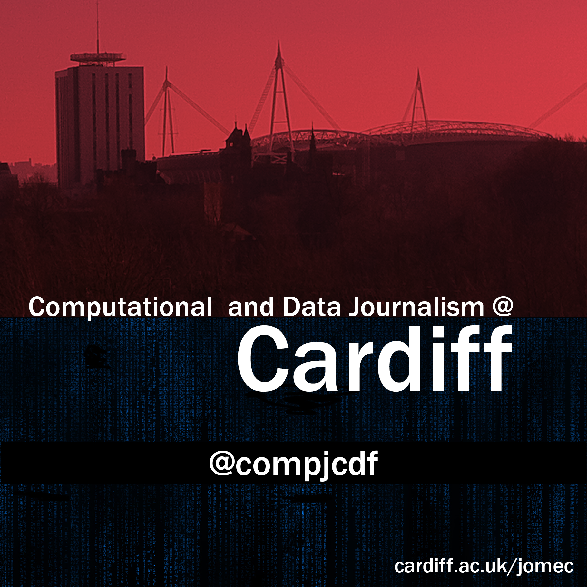

Human Science Visualisation
Dr Martin Chorley
@martinjc

Courtesy of Oak Ridge National Laboratory, U.S. Dept. of Energy
CC BY-NC 2.0 by
Laura Billings
CC BY-ND 2.0 by
Mick Baker
CC BY-NC 2.0 by
duncan c